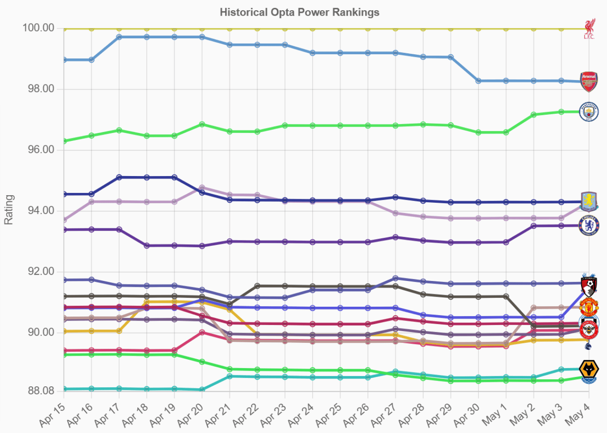

What Is the Historical Opta Power Rankings Tool?
The Historical Opta Power Rankings tool visualizes daily football club ratings—published by industry‑leading Opta analytics—on an intuitive, interactive line chart. Filter by league or individual club to compare performance over time, spot trends, and make data‑driven analyses.
Whether you’re a journalist, analyst, or die‑hard fan, the historical rankings give you a clear, chronological view of how clubs rise and fall in strength, backed by granular match‑event data.
See It in Action
Visualize club performance trends with dynamic tooltips, axis toggles, and range controls.
Key Features
- Daily Updated Ratings: Track club power scores every single day.
- Multi‑League Support: Compare teams across the Premier League, La Liga, Serie A, and more.
- Custom Filters: Select any combination of clubs or leagues to tailor your view.
- Interactive Time Slider: Zoom into specific periods—from a single week to entire seasons.
- Extensive Coverage: Analyze data for over 10,000 football clubs worldwide.
How to Use the Tool
- Select your league(s) or specific club(s) using the filter panel.
- Adjust the ranking‑range slider on the left to focus on top or underperforming teams.
- Use the date‑range slider below to zoom into key periods (e.g., title races, slumps).
- Hover over the lines to see exact daily ratings and ranking positions.